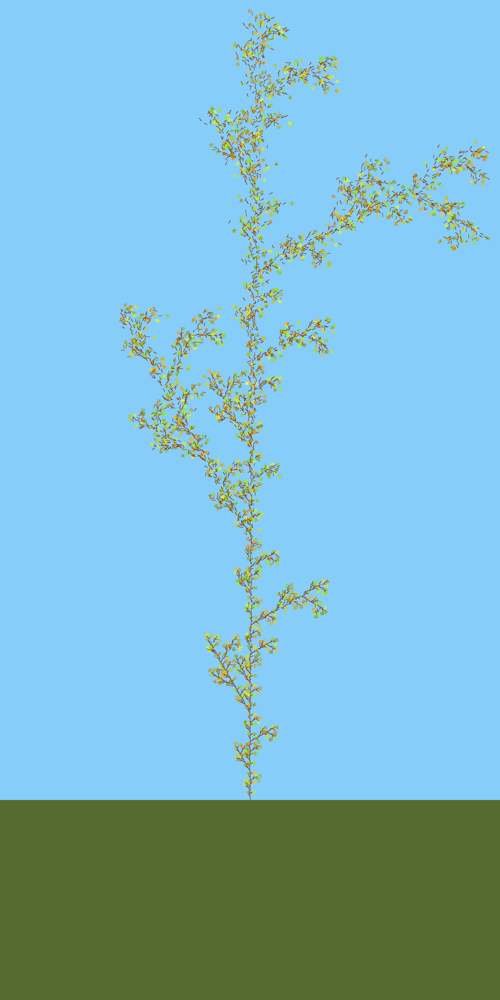
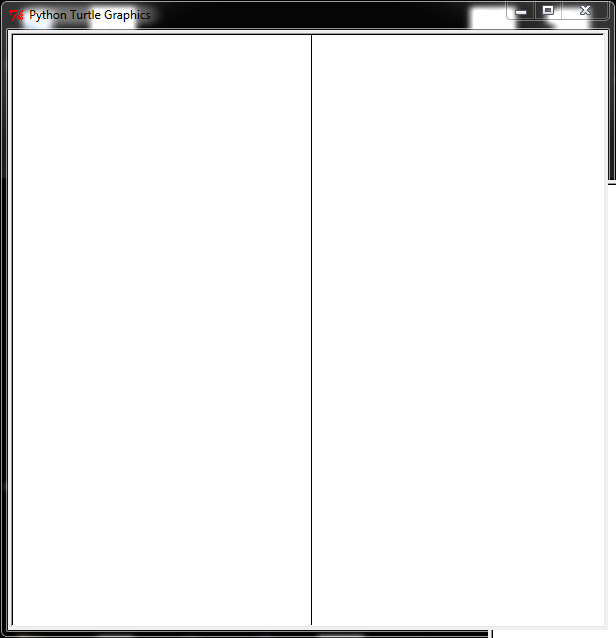
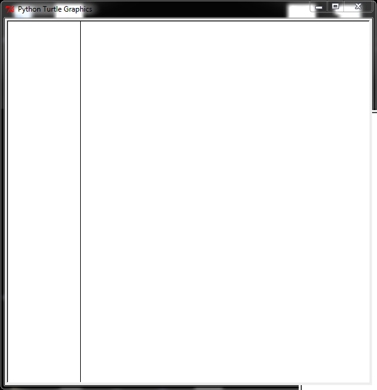
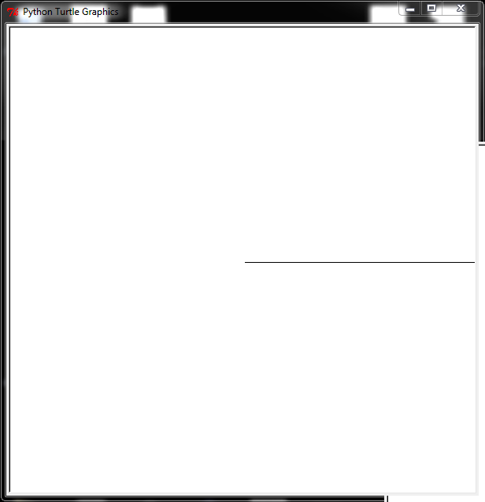

Project 3: Limning L-Systems
project3.py file). (2) Post an image in the
cs1120 slack group showing your most awesomest fractal.
Purpose
- Practice programming with recursive definitions and procedures
- Explore the power of rewrite rules
- Write recursive functions that manipulate lists
- Make a course logo better than The Great Lambda Tree of Infinite Knowledge and Ultimate Power.
{kind=link}
Preparation
Before starting this project, you should complete Udacity cs101 Lesson 4: Responding to Queries. It is not necessary to do the Lesson 4: Problem Set.
Collaboration Policy
For this assignment, you may work alone or work with a partner. If you work with a partner, you and your partner should submit a single assignment with both of your names and UVA ids on it. You and your partner should work on all the problems together, and both of you must completely understand everything you turn in. You should also take turns driving (typing) when you are at the computer.
Regardless of whether you work alone or with a partner, you may discuss the assignment with anyone you want and get help from others, so long as it is help in the spirit of learning how to do things yourself not getting answers you don't understand. You should understand everything you turn in for the assignment well enough to be able to produce it completely on your own.
Remember to follow the course pledge you read and signed at the beginning of the semester. For this assignment, you may consult any outside resources, including books, papers, web sites and people, you wish except for materials from previous cs1120 courses or direct solutions to the given problems. You may consult anyone you want, but that person cannot type anything in for you and all work must remain your own and outside sources should never give you specific answers to problem set questions.
If you use resources other than the class materials, lectures and course staff, you should document this in your turn-in.
You are strongly encouraged to take advantage of the scheduled help hours and office hours for this course.
Project 3 Repository
Set up your project3 repository in the same way as you did for project 1 and project 2.
-
Fork Project 3. Visit https://bitbucket.org/cs1120/project3/fork. Make sure to check the "This is a private repository" box to make your forked repository private (only visible to yourself and people you authorize to access it). If you are working with a partner, just one of you should fork the repository. Then, add the other partner's bitbucket id to have access to it.
-
Clone to your machine. To have a working copy of the repository on your machine, clone the forked repository in SourceTree by selecting
File | New/Cloneand enter the URL of the cloned repository. You can copy this from the project page you see in bitbucket.org afer forking the provided Project 3 repository. It should be a URL likehttps://<your bitbucket id>@bitbucket.org/<your bitbucket id>/project3.git. If you are working with a partner, both partners should clone the forked repository, so you each have a local copy of it. (For this project, you should work together when you work on the code. In general, though, using git allows many people to work on the same code and share their changes, and handle conflicts when two people edit the same file.)
The project3 repository contains these files:
-
project3.py— This is the file you will edit and turn in. -
lsystem.py— Provides code for representing and manipulating L-System commands. (You will need to make a few changes to this file for Exercise 1, but do not need to turn it in.) -
curves.py— Code for colors, points, and curves. (You will not need to edit this file, but should understand almost everything in it.) -
graphics.py— Code for drawing. You do not need to look at this file, unless you really want to. -
canvasvg.py— provided library code for saving your fractals as image files on disk. This code does a lot of low-level image manipulation, and you do not need to read or understand this file.
Background: L-System Fractals
In this problem set, you will explore a method of creating fractals
known as the Lindenmayer system (or L-system).
Aristid Lindemayer, a
theoretical biologist at the University of Utrecht, developed the
L-system in 1968 as a mathematical theory of plant development. In the
late 1980s, he collaborated with Przemyslaw Prusinkiewicz, a computer
scientist at the University of Regina, to explore computational
properties of the L-system and developed many of the ideas on which this
problem set is based.
The idea behind L-system fractals is that we can describe a curve as a
list of lines and turns, and create new curves by rewriting old
curves. Everything in an L-system curve is either a forward line
(denoted by F), or a right turn (denoted by Ra where a is an
angle in degrees clockwise). We denote left turns by using negative
angles.
We create fractals by recursively replacing all forward lines in a curve
list with the original curve list. Lindemayer found that many objects
in nature could be described using regularly repeating patterns. For
example, the way some tree branches sprout from a trunk can be described
using the pattern: F O(R30 F) F O(R-60 F) F.
This is interpreted as: the trunk goes up one unit distance, a branch
sprouts at an angle 30 degrees to the trunk and grows for one unit. The
O means an offshoot — we draw the curve in the following
parentheses, and then return to where we started before the
offshoot. The trunk grows another unit and now another branch, this time
at -60 degrees relative to the trunk grows for one units. Finally the
trunk grows for one more unit. The branches continue to sprout in this
manner as they get smaller and smaller, and eventually we reach the
leaves.
We can describe this process using replacement rules. The rules are similar to the BNF replacement rules we have used previously, with one big difference: instead of just picking one nonterminal to replace for each step, with the L-System rules we replace all occurences of the nonterminal with its replacement.
For example:
Start:[F]
Rule:F ::= [F, O[R30, F], F, O[R-60, F], F]
Here are the commands this produces after two iterations:
Iteration 0:[F]
Iteration 1:[F, O[R30, F], F, O[R-60, F], F]
Iteration 2:
[F, O[R30, F], F, O[R-60, F], F, O[R30, F, O[R30, F], F, O[R-60, F], F],
F, O[R30, F], F, O[R-60, F], F, O[R-60, F, O[R30, F], F, O[R-60, F], F],
F, O[R30, F], F, O[R-60, F], F]
Here's what that looks like graphically:
|
 Iteration 5 (with color) The Great Lambda Tree of Infinite Knowledge and Ultimate Power |
{kind=link}
{kind=link}
{kind=link}
{kind=link}
Breaking down the Problem
We can divide the problem of producing an L-system fractal into two main parts:
-
Produce a list of L-system commands that represents the fractal by rewriting according to the L-system rule; and
-
Drawing a list of L-system commands.
We will first work on producing the list of L-system commands, and then work on how to draw a list of L-system commands.
Representing L-System Commands
Here is a BNF grammar for L-system commands:
- CommandSequence ::= [ CommandList ]
- CommandList ::= Command, CommandList
- CommandList ::= Command
- Command ::= F
- Command ::= RAngle
- Command ::= O CommandSequence
- Angle ::= OptSign Number
- OptSign ::= -
- OptSign ::= ε
- Number ::= Digit Digits
- Digits ::= Digit Digits
- Digits ::= ε
- Digit ::= 0 | 1 | 2 | 3 | 4 | 5 | 6 | 7 | 8 | 9
We need to find a way to turn strings in this grammar into lists and
objects we can manipulate in a Python program. We will use a list of
lists to represent a CommandList and a list of strings to represent
different commands. For example, the list ['F'] will denote forward,
['R', angle] will denote a rotation, and
['O', commandsequence] will denote an offshoot.
def make_forward_command():
"""Returns an object that represents a forward command, Command ::= F"""
return ['F'] # creates a list of one element, 'F'
def make_rotate_command(angle):
"""Returns an object that represents a right turn of angle degrees, Command ::= R Angle"""
return ['R', angle] # creates a list of two elements, 'R' and a number
def make_offshoot_command(commandsequence):
"""Returns an object that represents an offshoot commnd of the input sequence,
Command ::= O CommandSequence"""
return ['O', commandsequence] # creates a list of two elements, 'O' and another list
It will be useful to have functions that take L-System commands as parameters, and return information about those commands. The next problem is to define functions for manipulating L-System commands.
lsystem.py (note that
these are not in project3.py, and you do not need to turn in these
definitions; but they do need to be correct for the rest of the code
to work):
is_forward(lcommand) ‐ returns True if the input is a forward
command (indicated by its first element being an 'F'); otherwise,
returns False.is_rotate(lcommand) — returns True if the
input is a rotate command; otherwise, returns False.
is_offshoot(lcommand) — returns True if the input is an offshoot command; otherwise, returns False.
get_angle(lcommand) — returns the angle of the input command,
which must be a rotate command. Produces an error if the command is not
a rotate command (see project3.py for how to produce an error).
get_offshoot_commands(lcommand) — returns the offshoot command
list associated with the input offshoot command. Produces an error if
the input is not an offshoot command.
If you define these functions correctly, you should produce these
evaluations (after running the lsystem.py module):
>>> is_forward(make_forward_command()) True >>> is_forward(make_rotate_command(90)) False >>> get_angle(make_rotate_command(90)) 90 >>> get_angle(make_forward_command()) # Error (specifics of error are up to you)
You should be able to make up similar test cases yourself to check that all the functions you defined work correctly.
Else-If Statements
Before getting into fractals, we'll introduce one new Python programming
construct. When we have if else statements, there are two branches we
can take: the if-branch and the else-branch. We can use elif (short
for "else if") statements if we want to have more than just two branches
in our program. For example, nucleotide_complement from Project 2
might be written:
def nucleotide_complement(base):
if base == 'G': return 'C'
elif base == 'C': return 'G'
elif base == 'A': return 'T'
elif base == 'T': return 'A'
else: # not a valid base
assert False
elif statements is never
necessary. That is, show that we can use always nested if-else
statements to do the same thing any elif statements.
Answer this question by providing a convincing written argument. Strive
to make your answer as general as and formal as possible. For example,
just showing how the example above (one example) could be written does
not necessarily handle all possible cases. A good answer would show how
to mechanically transform any elif construct into one with the same
meaning that does not use elif. (It is not necessary to turn anything
in for this, but you should make sure you understand it, and ask
questions if not.)
We don't need to know how to use elif statements, but using them can make our code shorter and more readable.
Rewriting Curves
The power of the L-System commands comes from the rewriting mechanism. Recall how we described the tree fractal:
Start:[F]
Rule:F ::= [F, O[R30, F], F, O[R-60, F], F]To produce levels of the tree fractal, we need a procedure that takes a list of L-system commands and replaces each
Fcommand with the list of L-system commands given by the rule.So, for every command in the list:
- If the command is a forward (
F) command, replace it with the replacement commands.- If the command is a turn (
Rangle) command, keep it as is.- If the command is an offshoot (
O[CommandSequence]) command, recursively rewrite every command in the offshoot's command list the same way.One slight complication is that the replacement commands are a list of L-system commands, and we want to end up with a flat list of L-System commands.
For example, consider a simple L-System rewriting:
Start:[F]
Rule:F ::= [F, R30, F]We want to get:
Iteration1:[F, R30, F]
Iteration2:[F, R30, F, R30, F, R30, F]
Iteration3:[F, R30, F, R30, F, R30, F, R30, F, R30, F, R30, F, R30, F]
However, if we naively replace each
Fwith the list[F, R30, F], we would instead get something a little different:Iteration1:[F, R30, F]
Iteration2:[[F, R30, F], R30, [F, R30, F]]
Iteration2:[[[F, R30, F], R30, [F, R30, F]], R30, [[F, R30, F], R30, [F, R30, F]]]
There are too many
[ ]'s!.To fix this problem, we need to flatten the result. Flattening a list take a list which make contain nested lists (which themsleves may contain nested lists) and returns a list which is just all the (non-list) elements in all the lists in order.
Problem 1. Define a function,flatten_commands, that takes as input a possibly nested list of L-System commands and returns a flattened list containing the same commands in the same order, but without any nested lists.Hint:
flatten_commandsis very similar to thelist_flattenexample from class, but that code won't work here since it would end up breaking into the L-System commands themselves since they are represented as lists. If you understand that code, though, you should be able to adapt it to defineflatten_commands.Problem 2. Define a functionrewrite_lcommandsthat takes a list of L-system commands as its first parameter. The second parameter is a list of L-system commands that should replace every forward command in the first list of commands in the result.Hint: You'll have to handle both forward commands and also offshoot commands specially.
If you define these procedures correctly, you should produce these evaluations:
>>> rewrite_lcommands(['F'], [['F'],['R', 30], ['F']]) [['F'], ['R', 30], ['F']] >>> rewrite_lcommands([['F'],['R', 30], ['F']], [['F'], ['F'], ['R', 30]]) [['F'], ['F'], ['R', 30], ['R', 30], ['F'], ['F'], ['R', 30]]To make interesting L-system curves, we will need to apply
rewrite_lcommandsmany times. We will leave that until the last problem since it will be a lot more fun to test this if we can actually draw our L-System fractals.Parsing and Unparsing. One thing that is very useful for debugging and testing code is to have easy ways to turn strings into objects (parsing), and to turn objects into strings (unparsing).
We have defined functions that parse and unprase L-System commands (in
lsystem.py):unparse_lsystem_command(command)returns a string representation of the L-System command.unparse_lsystem_sequence(commands)returns a string representation of an L-System command sequence.parse_lsystem_command(command)returns an L-System command object that corresponds to an input string.parse_lsystem_sequence(sequence)returns an L-System command sequence (list of L-System commands) corresponding to the input string.Here are some examples using these functions (instead of the much harder to read example above):
>> rewrite_lcommands(parse_lsystem_sequence('[F, R30, F]'), parse_lsystem_sequence('[F, F, R30]')) [['F'], ['F'], ['R', 30], ['R', 30], ['F'], ['F'], ['R', 30]] >>> unparse_lsystem_sequence(_) '[F, F, R30, R30, F, F, R30]'(Note that we use
_in the second expression as a shortcut to getting the value of the last expression evaluated in the Python shell.)Drawing L-System Fractals
To draw our L-system fractals, we need procedures for drawing curves. We consider a curve any set of points in a two-dimensional space, so a straight line is a kind of curve as is a circle, or a complex drawing like a fractal.
There are many different ways of thinking about curves. Mathematicians sometimes think about curves as functions from an x-coordinate value to a y-coordinate value. For example, y = 3_x_, describes a simple slanted line.
The problem with this way of thinking about curves is there can only be one y point for a given x point. This makes it impossible to make simple curves like a circle where there are two y points for every x value on the curve.
So, a more useful way of thinking about curves is as functions that map numbers to [x, y] points. We can produce infinitely many different points on the curve by evaluating the curve function with the (infinitely many different) real numbers between 0 and 1 inclusive.
You can think of the number between 0 and 1 as time — the first point of the curve you draw will be the point returned by
curve(0.0), the middle part of the curve you draw will be the point returned bycurve(0.5), and the last part of the curve you draw will be the point returned bycurve(1.0).Of course, we can't really evaluate the curve function at every real number between 0 and 1 because there are infinitely many of them — it would take too long (even with an infinitely fast computer)! Instead, we will evaluate it at a large (but finite) number of values distributed evenly between 0 and 1 to display an approximation of the curve.
Representing Points
We need a way to represent the points on our curves. A point is a pair of two values, x and y representing the horizontal and vertical location of the point.
We will use a coordinate system from (0, 0) to (1, 1):
(0.0, 1.0) (1.0, 1.0)
(0.0, 0.0) (1.0, 0.0) A point has an x and y coordinate. So, to represent points we define procedures
make_point,point_xandpoint_y. We use lists to represent points.Our pictures will be more interesting if points can have color too. So, we represent a colored point using a list of three values:
x,yandcolor:def make_point(x, y): return [x, y, BLACK] # default color is def make_colored_point(x, y, c): return [x, y, c] def point_x(point): return point[0] def point_y(point): return point[1] def point_color(point): return point[2]We have provided some procedures for drawing on the window in
graphics.pyincluding:window_draw_point(point)— Draw the point on the window.
For example,window_draw_point(make_point(0.5, 0.5))puts a black dot in the center of the window. (The point is only one pixel, so it is hard to see.)window_draw_line(pointa, pointb)— Draw a black line from pointa to pointb.
For example,window_draw_line(make_point(0.0, 0.0), make_point(1.0, 1.0))draws a diagonal line from the bottom left corner to the top right corner.Read through
curves.pyfor other useful drawing functions.Drawing Curves
Building upon points, we can make curves and lines (straight lines are just a special kind of curve).
Curves are procedures from values to points. One way to represent a curve is as a function that returns a point for every input value between 0.0 and 1.0. Ideally, there would be infinitely many points to draw on the curve, but in practice, we will need to select a fininte number of points to evaluate that we hope provides a good approximation of the curve to draw.
For example, the following here is a function that defines a curve that is a horizontal line accross the window:
def mid_line(t): return make_point(t, 0.5)If we call
mid_linewith an input value x, it returns the point(x, 0.5). Hence, if we applymid_lineto all the values between 0.0 and 1.0, we get a horizontal line.Of course, we can't really apply it to all the values, but can draw enough of them that it will look like the full curve, a solid horizontal line. So, to draw a curve we need to apply the curve procedure to many values in the range from 0.0 to 1.0 and draw each point it evaluates to.
The
draw_curve_pointsprocedure does that:def draw_curve_points(curve, npoints): for step in range(npoints + 1): window_draw_point(curve(step / npoints))The procedure
draw_curve_pointstakes a function representing a curve, andnpoints, the number of points to draw. It draws npoints + 1 evenly spaced points for the curve.For example, if
npointsis 5,draw_curve_pointswill draw the curve with time inputs 0.0, 0.2, 0.4, 0.6, 0.8, and 1.0. Note that this is actually 6 points, since the loop usesrange(npoints + 1)to include both the0.0and1.0points. (Improvingdraw_curve_pointsto draw n points including the 0.0 and 1.0 times, with the others evenly divided is left as a challenge exercise!)Problem 3. Define avertical_mid_linecurve function that can used to draw a vertical line in the middle of the window. So,draw_curve_points(vertical_mid_line, 1000)draws a vertical line in the middle of the window as shown below. Problem 4. Define a function,make_vertical_linethat takes one number as its input and returns a function that produces a vertical line at that the horizontal location given by the input. For example,draw_curve_points(make_vertical_line(0.5), 1000)should produce a vertical line in the middle of the window (identical todraw_curve_points(vertical_mid_line, 1000)) anddraw_curve_points(make_vertical_line(0.2), 1000)should produce a vertical line near the left side of the window (shown in the image below). Manipulating Curves
The good thing about defining curves as functions is that it is now possible to combine then in interesting ways.
For example, the procedure
rotate_ccwtakes a curve and rotates it 90 degrees counter-clockwise by simply swapping the x and y points:def rotate_ccw(curve): def new_curve(t): ct = curve(t) return make_point(point_y(ct), point_x(ct)) return new_curveNote that
rotate_ccw(curve)returns a function that is a new curve that is just like the input curve, but rotated.The function
rotate_ccwis a higher-order function: it takes a function (representing a curve) as its input, and returns a new function (that represents the rotated curve).Inside
rotate_ccw, thenew_curvefunction is defined. Within its definition, we can usecurve, the name of the parameter torotate_ccwto refer to the input curve. The new local variable,ctstores the result ofcurve(t)so it is not necessary to call it twice, and then we create a new point using thepoint_y(ct)andpoint_x(ct)to flip thexandycoordinates. (For simplicity, the definition here does not include color; seecurves.pyfor a definition ofrotate_ccwthat preserves the colors of points.)Predict what
draw_curve_points(rotate_ccw(mid_line), 1000)anddraw_curve_points(rotate_ccw(rotate_ccw(mid_line)), 1000)will do. Confirm your predictions by trying them in your Python interpreter.You may have just read over that paragraph and not actually done the prediction. The instructions are not just there to waste time: experience suggests that students who do not do them become confused on subsequent problems and then come back. Its really important to understand what is going on here, before attempting the more complex problems. Thus you can save time by doing them now! If you already did them, great work!
Here's another example:
def scale(curve, ratio): def new_curve(t): ct = curve(t) return make_point(ratio * point_x(ct), ratio * point_y(ct)) return new_curvePredict what
draw_curve_points(scale(mid_line, 0.5), 1000)will do, and then try it in your interpreter.The
scaleprocedure doesn't produce quite what we want because in addition to changing the size of the curve, it moves it around. Why does this happen? Try scaling a few different curves to make sure you understand why the curve moves.One way to fix this problem is to center our curves around
(0,0)and then translate them to the middle of the screen. In mathematics and geometry, translation means moving a shape without rotating or flipping it. That is, to translate a curve is to "slide" it.We can do this by adding or subtracting constants to the points they produce:
def translate(curve, delta_x, delta_y): def new_curve(t): ct = curve(t) return make_point(delta_x + point_x(ct), delta_y + point_y(ct)) return new_curveUsing
translate, we can now definemid_lineby translating a horizontal line (at the bottom of the window) to the middle:def horiz_line(t): return make_point(t, 0) mid_line = translate(horiz_line, 0, 0.5)Problem 5. To check you understand everything so far, define a curve functionhalf_line(t)that usestranslate,horiz_lineandscaleto define a horizontal line half the width of the window that starts in the middle of the display window. Executingdraw_curve_points(half_line, 1000)should produce a horizontal line that starts in the middle of the window and extends to the right boundary (as shown below). Hint: If you do not see anything when you are drawing a curve, it may be that you haven't yet appliedtranslateand the points are being drawn along the bottom edge of the screen. You may find it helpful to modifydraw_curve_pointsto print out the points as it draws them so you can see from the printed points if there are any points off the screen (if you do this, you'll want to reduce the number of points to print less on the screen).In addition to altering the points a curve produces, we can alter a curve by changing the time values it will see. For example,
def first_half(curve): def new_curve(t): return curve(t / 2) return new_curveis a function that takes a curve and produces a new curve that only draws the first half of the input curve.Predict what each of these expressions will do:
draw_curve_points(first_half(mid_line), 1000)draw_curve_points(first_half(first_half(mid_line)), 1000)Try evaluating them in your interpreter to check if you were right.
The provided code in includes several other functions that transform curves including:
scale_x_y(curve, x_scale, y_scale)— returns a curve function that is the inputcurvestretched along the x and y axis using the given scale factors.scale(curve, ratio)— returns a curve function that is the inputcurvestretched along both the x and y axis by the sameratio.rotate_around_origin(curve, degrees)— returns a curve function that is the input curve rotated counterclockwise by the given number of degrees.
You should be able to understand the code in
curves.pythat defines these functions.Connecting Curves
It is also useful to have curve transforms that combine multiple input curves into a new curve.
An example is
connect_rigidly(curve1, curve2)which returns a curve that consists ofcurve1followed bycurve2. The starting point of the new curve is the starting point ofcurve1, and the final point ofcurve2is the final point of the new curve.Here's how
connect_rigidlyis defined (try to figure this out from just the code here, but look at the version incurves.pyto see more explanations in the comments):def connect_rigidly(curve1, curve2): def new_curve(t): if (t < 0.5): return curve1(2 * t) else: return curve2(2 * t - 1) return new_curveNote that
connect_rigidlygives half of its points to drawingcurve1and half tocurve2, so when we calldraw_curve_points(..., n)we'll may want to double the value ofnto ensure there are enough points in each curve. This becomes a big problem when many curves are connected (as will be necessary to draw interesting fractals); we'll return to it soon.Predict what the expression below will do:
draw_curve_points(connect_rigidly(vertical_mid_line, mid_line), 1000)
Is there any difference between that and this one:draw_curve_points(connect_rigidly(mid_line, vertical_mid_line), 1000)Check your predictions in the interpreter, and try your own experiments connecting and transforming different curves to make sure you understand how everything works so far.
Distributing Points
The way
connect_rigidlyis defined above, we use all the t-values below 0.5 on the first curve, and use the t-values between 0.5 and 1.0 on the second curve.If the second curve is the result of connecting two other curves, like
connect_rigidly(c1, connect_rigidly (c2, c3))then 1/2 of the points will be used to drawc1, 1/4 to drawc2, and 1/4 to drawc3. (If you're not sure why, take another look at the connect_rigidly code.) That means thatc2andc3will look dotty or grainy compared toc1.This isn't too big a problem when only a few curves are combined; we can just increase the number of points passed to
draw_curve_pointsto have enough points to make a smooth curve. However, you will be drawing fractal curves made up of thousands of connected curves. Just increasing the number of points won't help much, as you'll see in the next problem.Problem 6. Define a functionnum_points(t, n)that determines the approximate number of points that will be used for the nth curve when drawingconnect_rigidly(c1, connect_rigidly(c2, connect_rigidly(c3, ... cn)))The first argument to
num_pointsis the number of points (t-values) total to draw. The second argument is the number of curves.
Think about this yourself first, but look inproject3.pyfor a hint if you are stuck. There are mathematical ways to calculate this efficiently, but the simplest way to calculate it is to define a procedure that keeps halving the number of points n times to find out how many are left for the nth curve.Your
num_pointsprocedure should produce results similar to:>>> num_points(1000, 10) 1.953125 >>> num_points(1000, 20) 0.00190734863281 >>> num_points(1000000, 20) 1.90734863281This means if we connected just 20 curves using
connect_rigidly, and passed the result todraw_curve_pointswith one million as the number of points, there would still be only one or two points drawn for the 20th curve. If we are drawing thousands of curves, for most of them, not even a single point would be drawn!To fix this, we need to distribute the points between our curves more fairly. We have provided a procedure
connect_curves_evenlyincurves.pythat connects a list of curves in a way that distributes the range of t-values evenly between the curves.The definition is a bit complicated, so don't worry if you don't understand it completely. You should, however, be able to figure out the basic idea for how it distributes the t-values evenly between every curve in a list of curves. (See
curves.pyfor a version with lots of comments explaining what is going on, but try to understand it from just the code here first.)def connect_curves_evenly(curvelist): ncurves = len(curvelist) def new_curve(t): which_curve = min(int(math.floor(t * ncurves)), ncurves - 1) chosen_curve = curvelist[which_curve] adjusted_t = ncurves * (t - which_curve * 1.0 / ncurves) return chosen_curve(adjusted_t) return new_curveIt will also be useful to connect curves so that the next curve begins where the first curve ends. We can do this by translating the second curve to begin where the first curve ends.
To do this for a list of curves, we translate each curve in the list the same way using a list comprehension:
def construct_simple_curvelist(curve, curvelist): endpoint = curve(1.0) delta_x = point_x(endpoint) delta_y = point_y(endpoint) return [curve] + [translate(tcurve, delta_x, delta_y) for tcurve in curvelist]Now that we have defined all of these procedures to manipulate, connect and draw listscurves, we just have to turn L-System fractals into lists of curves and then we can draw them!
Drawing L-System Curves
To draw an L-system fractal, we need to convert a sequence of L-system commands into a curve.
We defined the
connect_curves_evenlyprocedure to take a list of curves, and produce a single curve that connects all the curves. So, to draw an L-System curve, we need a procedure that turns an L-System Curve into a list of curve procedures.The
convert_lcommands_to_curvelistprocedure converts a list of L-System commands into a curve. Here is a template forconvert_lcommands_to_curvelist(with some missing parts that you will need to complete). It will be explained later, but try to understand it yourself first.def convert_lcommands_to_curvelist(lcommands): if len(lcommands) == 0: # We need to make a leaf with just a single point of green return [lambda t: make_colored_point(0, 0, GREEN)] elif is_forward(lcommands[0]): # Make a vertical_line and then recurse on the rest of the list return construct_simple_curvelist(vertical_line, convert_lcommands_to_curvelist(lcommands[1:])) elif is_rotate(lcommands[0]): rotate_angle = -1 * get_angle(lcommands[0]) # Every curve in the rest of the list should be rotated # Problem 7: replace with code for doing rotation raise RuntimeError("Rotate not yet implemented!") elif is_offshoot(lcommands[0]): # Problem 8: replace with code for doing offshoots raise RuntimeError("Rotate not yet implemented!") else: # This branch should never happen, but let's raise an error if it does. raise RuntimeError("Bad Command")We define
convert_lcommands_to_curvelistrecursively.The base case is when there are no more commands (the
lcommandsparameter is the empty list). It evaluates to the leaf curve (for now, we just make a point of green — you may want to replace this with something more interesting to make a better fractal). Sinceconvert_lcommands_to_curvelistevaluates to a list of curves, we need to make a singleton list of curves containing only one curve.Otherwise, we need to do something different depending on what the first command in the command list is. If it is a forward command we draw a vertical line, and connect the rest of the fractal is connected to the end of the vertical line. The recursive call to
convert_lcommands_to_curveproduces the curve list corresponding to the rest of the L-system commands. Note how we passlcommands[1:]in the recursive call to get the rest of the command list.Problem 7. Fill in the missing code for handling rotate commands (marked inproject3.py). You will want to userotate_around_origin(curve, rotate_angle)somewhere in your code to rotate every curve after the rotate command by therotate_angle. Therotate_around_originfunction was introduced briefly above and is defined incurves.py.You can test your code by drawing the curve that results from any list of L-system commands that does not use offshoots. For example, evaluating the code below should produce a "V":
lcommands = parse_lsystem_sequence("[R150, F, R-120, F]") curvelist = convert_lcommands_to_curvelist(lcommands) c1 = connect_curves_evenly(curvelist) c2 = translate(c1, 0.3, 0.7) c3 = position_curve(c2, 0, 0.5) draw_curve_points(c3, 10000)Problem 8. Fill in the missing code for handling offshoot commands (marked inproject3.py). (See hints below for help.)We have provided the
position_curvefunction (defined incurves.py) to make it easier to fit fractals into the graphics window:`position_curve(curve, startx, starty)` returns a curve that translates `curve` to start at `(startx, starty)` and scales it to fit into the graphics window maintaining the aspect ratio (the x and y dimensions are both scaled the same amount).Now, you should be able to draw any L-System command list using
position_curveand theconvert_lcommands_to_curvelistfunction you have now completed.Try drawing a few simple L-System command lists before moving on to the next part. For example, given this input:
draw_curve_points(position_curve(connect_curves_evenly( convert_lcommands_to_curvelist(TREE_COMMANDS)), 0.5, 0.1), 5000)Your output should look like this:
make_lsystem_fractalthat takes three parameters:replace_commands, a list of L-System commands that replace forward commands in the rewriting;start, a list of L-system commands that describes the starting curve; andlevel, the number of iterations to apply the rewrite rule. It should return a sequence of L-System commands that results from repeating the replacement ruleleveltimes, starting from thestartcommands. (Hint: You should use the rewrite_lcommands you defined in Problem 5.)You should now be able to draw a tree fractal using
make_tree_fractalanddraw_lsystem_fractal(these and theTREE_COMMANDSlist of L-system commands are defined inlsystem.py):def make_tree_fractal(level): make_lsystem_fractal(TREE_COMMANDS, [make_forward_command()], level) def draw_lsystem_fractal(lcommands): draw_curve_points( position_curve( connect_curves_evenly( convert_lcommands_to_curvelist(lcommands)), 0.5, 0.1), 50000)For example,
draw_lsystem_fractal(make_tree_fractal(3))should produce a tree fractal with 3 levels of branching.Draw some fractals by playing with the L-system commands. Try changing the rewrite rule, the starting commands, level and leaf curve (in
convert_lcommands_to_curvelist) to draw an interesting fractal. You might want to make the branches colorful, or even include curves that change color along the points.Try and make a fractal picture that will make a better course logo than the Great Lambda Tree of Infinite Knowledge and Ultimate Power.
Your last-displayed fractal image file is saved in
fractal.svgin your current directory. It is overwritten every time, so make sure to save any interesting fractals with different filenames.Problem 10. Submit your best fractal image to the#generalchannel on slack. You can modify any of the code you want, as well as do extra drawing in addition to the fractal to make a cool image. If your image is interesting or beautiful enough, you may receive untold fame and eternal glory by having it be used as the course logo, or at least on a lecture slide! Include all the code you used to generate the image in yourproject3.pysubmission. If you want to use another tool to convert the.svgimage to another image format like.pngor.jpgthat will display in-line in slack that's fine (but not necessary).Credits: This problem set was originally created for CS200 Spring 2002 by Dante Guanlao, Jon Erdman and David Evans, and revised for CS200 Spring 2003 by Jacques Fournier and David Evans, and revised for CS200 Spring 2004, CS150 Fall 2005, and CS150 Spring 2007 by David Evans. A version of this assignment was also used at the University of Georgia. Most recently, it was modified for CS 150 in Spring 2009 by Westley Weimer (including adding the Extra Credit section), and updated for cs1120 Fall 2009 by David Evans. Jonathan Burket and Lenny Li adapted it for Python in 2012, and Yuchi Tian revised it for Python 3 in 2016.
{kind=link}
{kind=link}
{kind=link}
{kind=link}